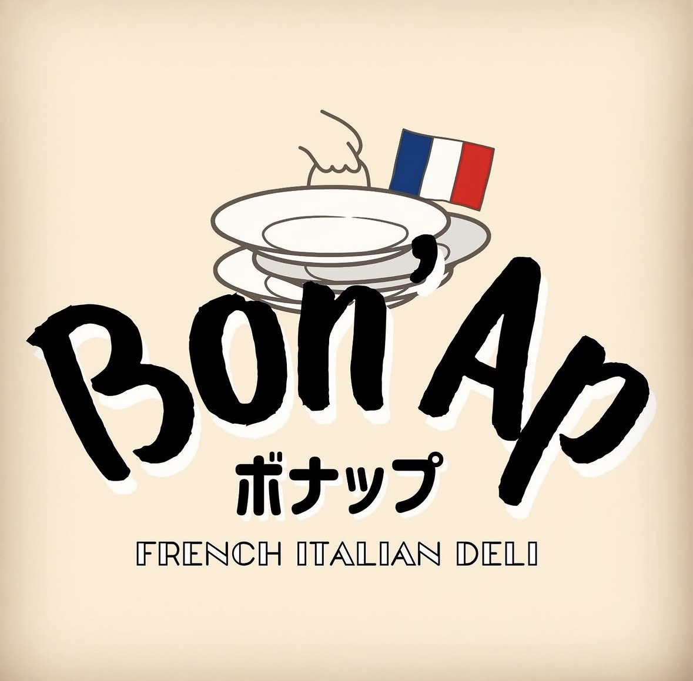
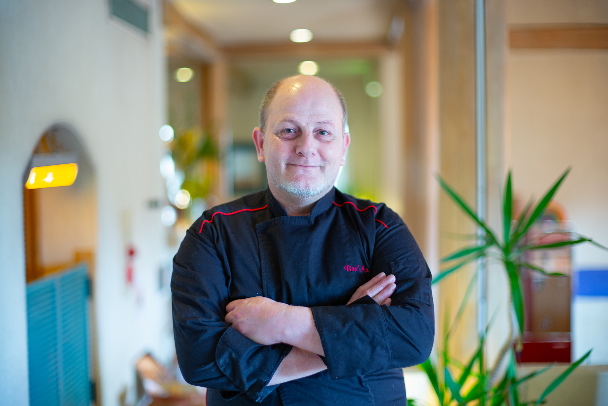
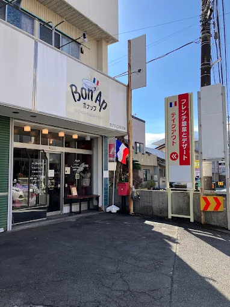
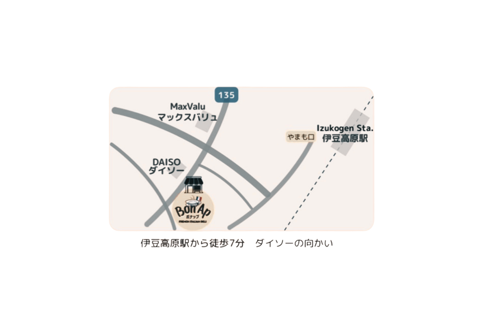

フランス人シェフが届ける
テイクアウトの枠を超えた
本格フレンチの持ち帰り
おうちでも、旅先でも、
そしていつでも食べられる。
それは、今までとは違う新しい体験。
もっと手軽にもっと自由に
お気に召すまま召し上がれ。
Delivered by a French chef —
beyond ordinary takeout,
real French cuisine to take home.
At home, on a trip,
or anytime at all.
A new kind of experience, unlike anything before.
More casual, more free —
eat exactly as you please.
(Bon' Ap)
生産者に直接会い、仕入れる圧倒的な鮮度とハイクオリティ。
伊豆半島の農家さんを中心に、
良いものがあれば北海道まで足を運びます。
無農薬や薬・ワクチンに頼らず育てられた、
安心できる食材をできる限り使用しています。
André meets producers face to face, sourcing ingredients of outstanding freshness and quality. Centered on farmers across the Izu Peninsula, he will travel as far as Hokkaido when something exceptional calls for it. Wherever possible, he uses ingredients raised without pesticides, drugs, or vaccines — food you can trust.

André
アンドレ
食を愛し楽しむ心を忘れない。 Never lose the love and joy of good food.
パリ生まれ。14歳でキッチンに立ち、
世界を渡り、伊豆高原に辿り着いたシェフ。
Born in Paris. Entered the kitchen at 14, traveled the world, and arrived in Izu Kogen.
ボナップのメニューは、
その日の仕入れとシェフのインスピレーションで日々変わります。
ここでしか出会えない、オリジナルレシピの数々がショーケースに並びます。
明日にはもう、二度と味わえないかもしれない──
そんな一期一会の出逢いをお楽しみください。
Bon' Ap's menu changes daily, shaped by the day's ingredients and the chef's inspiration. Original recipes found nowhere else fill the showcase. By tomorrow, today's dish may be gone for good — savor each one-of-a-kind encounter while it lasts.
その日のメニューや旬の食材情報をInstagramで発信しています。 Daily menus and seasonal ingredient stories are shared on Instagram.
事前予約制のテイクアウトコースです。
品切れを気にせず、特別な日のテーブルを彩ります。
リクエスト送信後、当店からのご連絡をもってご予約確定となります。
A take-away course meal, reserved in advance.
We will confirm availability based on your request, and your reservation is finalised upon contact from our team.
No need to worry about sell-outs — focus on making the occasion special.
| 1名様 | Per person |
¥10,000（税込） ※お子様用のメニューはございません ¥10,000 (tax incl.) *No children's menu available |
| 受取日 | Pick-up date | 営業日3日目以降 Please select a pick-up date at least 3 business days after your order date (not including today). |
| 受取時間 | Pick-up time | 15:00〜18:30 |
1回のご予約につき、10名様まで承ります。 We accept reservations for up to 10 guests.
Commander
ご予約Reserve
予約日を含めず営業日3日目以降をお選びください Please select a pick-up date at least 3 business days after your order date (not including today).
Confirmer
ご連絡Confirmation
お電話またはメールにてご連絡いたします
この連絡をもってご予約が確定となります
Our team will contact you by phone or email to confirm your details. Your reservation is confirmed upon this contact.
Récupérer
お渡しPick Up
ご希望の日時に店頭までお越しください Come to the shop at your chosen date and time.
TEL · 070-2219-2694

